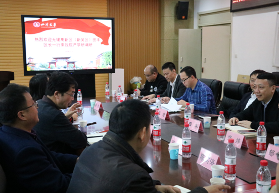

学院通知 · 科研创新
新吴区专家考察团赴电子信息学院进行产学研合作对接活动
发布时间：2018-12-07
12 月 3 日，江苏省无锡市新吴区专家考察团对我院开展产学研调研和对接活动。考察团由新吴区副区长、科技镇长团团长田丰带队，科技创新促进中心、无锡太湖国际科技园投资开发有限公司、市委组织部人才办以及江溪街道等相关单位参与。科技创新促进中心副主任王澄、信息服务部长郁杨以及项目经理杨莹、太湖国际科技园党委副书记郑炜、总经理助理王健及科员张瑜、市委组织部人才办副主任吴俊、江溪街道招商发展科副科长徐俊以及我院在新吴区的挂职教师韩敬华副教授参加了本次产学研对接活动。 电子信息学院邰明松书记、冯国英院长、陈笃海副书记、张启灿副院长以及杨阳副院长等参见会谈。邰书记、冯院长等领导就学院在产学研、学生培养各个方面的情况进行了介绍。田丰区长就双方深入合作的方式构想进行了详细的说明，希望双方进一步从学生培养、毕业生实习、项目合作等全方位进合作。会后，考察团首先参观了四川大学激光微纳工程研究团队，冯院长就研究所开展的项目进行了详细的实地讲解，与考察团就下一步可以开展的合作工作进行深入探讨。 随后，考察团参观了应用电磁研究团队，杨阳副院长就微波在污染治疗、能量传输、化学催化等方面的应用进行了详细的介绍与现场演示。最后，在四川大学产业技术研究院何孟斧老师的带领下，参观了四川大学科研成果展厅，对四川大学在各个方面的突出成果进行了全面了解。 通过此次与我院的考察交流，加深了双方的相互了解，为进一步开展学生联合培养、项目对接和人才引入等工作奠定了基础。
